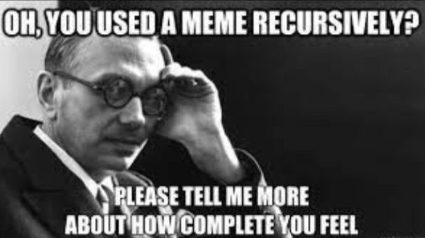

Filosofia
“Kurt Gödel”, de W. V. O. Quine
Por ALL
14/02/2022
Nenhum comentário

Traduzido por Gabriel Marculino Ferreira.
[Retirado de W. V. Quine, 1982, ‘Theories and things’, Cambridge, MA: Harvard University Press,
Artigo Reimpresso do Anuário de 1978 da American Philosophical Society: 143 – 147];
Biografia
Filosofia analítica
Kurt Godel
Marculino
Matemática
Teorema da incompletude
Traduções
W. V. O. Quine